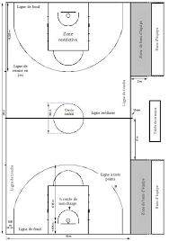
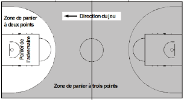

Les règles de base pour un match basket en 5 contre 5 au basket c'est 2 équipes qui ont un chacun un entraîneur et possibilité d'avoir un entraîneur adjoint.
Ils ont chacun 5 joueurs sur le terrain et les équipes ont droit à 7 remplacement maximums.
Pour qu'un match commence, il y a besoin de 1 arbitre minimum et 3 arbitres maximum
(Crew Chief, Umpire 1, Umpire 2:appelation des arbitres en anglais et Crew Chief, 2ème arbitre et 3ème arbitre:appelation des arbitres en français)
et 2 personnes à la table minimum(marqueur et chronométreur) et au maximum 5 personnes(voir la légende de l'image).
Et il faut principalement un ballon. Un ballon taille 7 pour les hommes et un ballon taille 6 pour les femmes.
Le terrain est limité avec des lignes rouges qui forment un rectangle qu'il mesure
13 à 15 mètres de large et 22 à 28 mètres de longueur dans la généralité.

Il y a 2 paniers où les 2 mesurent 3m05 de hauteur. Un panier vaut 1, 2 ou 3 points. 1 point pour un panier marquer au lancer franc
soi le demi-cercle au-dessus de la zone restrictive qui est à 4 mètres 20 du panier, les
3 points derrière la ligne pleine à 6 mètre 75 du panier et le reste à 2 points(voir les images).


Un match dure 4 périodes de 10 minutes et 5 minutes au prolongation en cas d'égalité jusqu'à les départagés en FIBA.
Les règles de la FIBA sont appliqués partout sauf aux Etats-Unis car par exemple,
en NBA, c'est 4 périodes de 12 minutes et en WCAA c'est 2 périodes de 20 minutes ou les lignes des 3 points sont différents....
Voir ce vidéo(sans son) pour plus de décription:
Les règles officiels FIBA:
les règles officiels de la FIBA de la saison 2018-2019
Document interprétations FIBA:
les interprétations de la FIBA de la saison 2018-2019